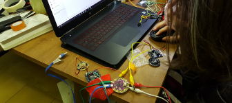
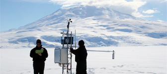
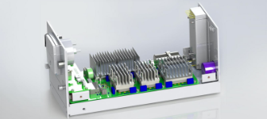

join us at michigan engineering fall 2020
Register on wolverine access now
- Build a Weather StationEach student is shipped supplies to create a weather station of
own. Explore introductory electronics with Arduino and programming with C, MATLAB, and Python. Build the and learn the technologies that are foundational to being engineer.  Analyze Global DataStudents can enroll whether they're on campus on entirely remote. Work with your classmates to share broad datasets and learn how engineering translates across countries, languages, and cultures.
Analyze Global DataStudents can enroll whether they're on campus on entirely remote. Work with your classmates to share broad datasets and learn how engineering translates across countries, languages, and cultures.- Identify a Related ProblemThe second half of your semester centers around applying your technical skills to real world problems. Choose from multiple scenarios based in engineering, scientific, or business settings with clients including NASA, Amazon, the National Park Service, Refraction AI, Weather Underground, and more!
- Create your Own SolutionWork with your team and use your newly developed skills to design a solution to real world problems.
Each student is shipped supplies to create a weather station of
their own. Explore introductory electronics with Arduino and
introductory programming with C, MATLAB, and Python. Build the
skills and learn the technologies that are foundational to being
an engineer.